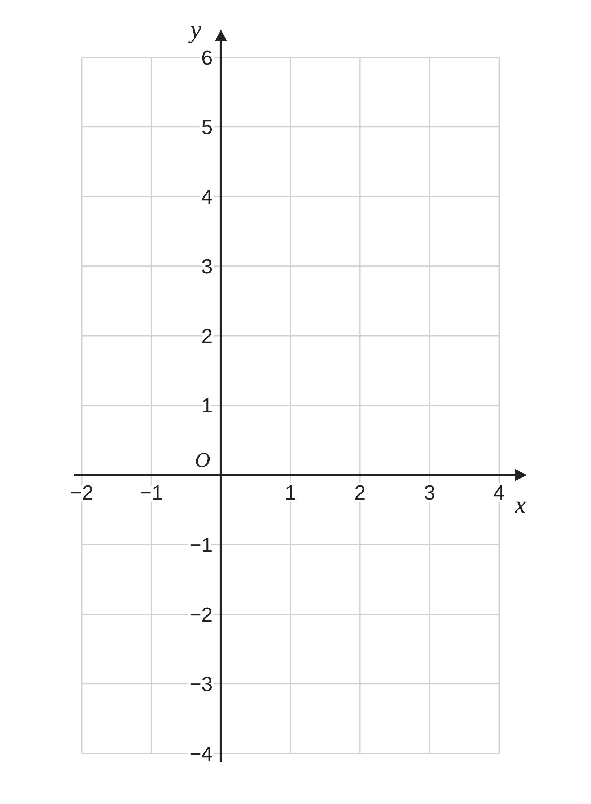
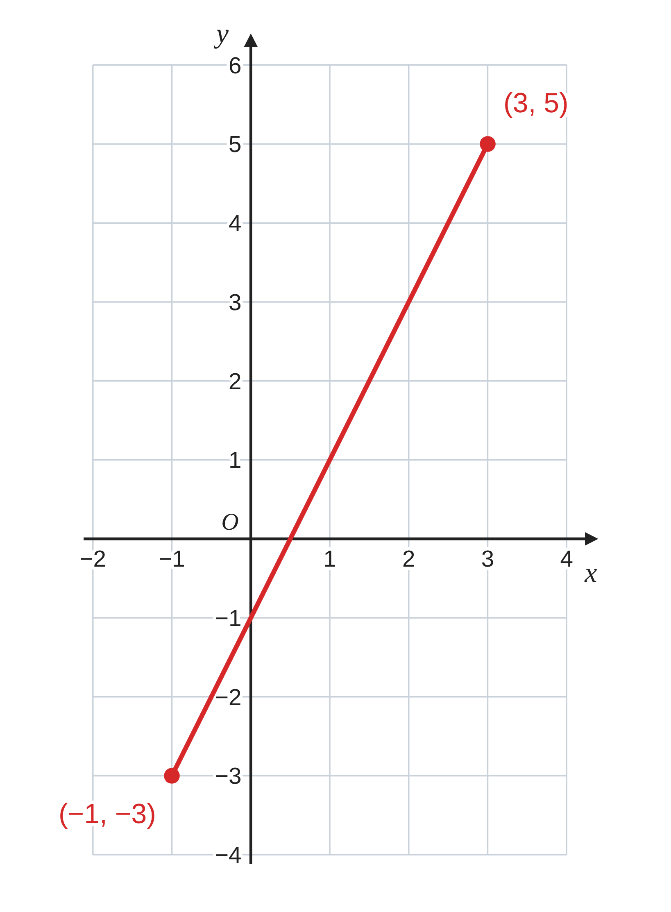
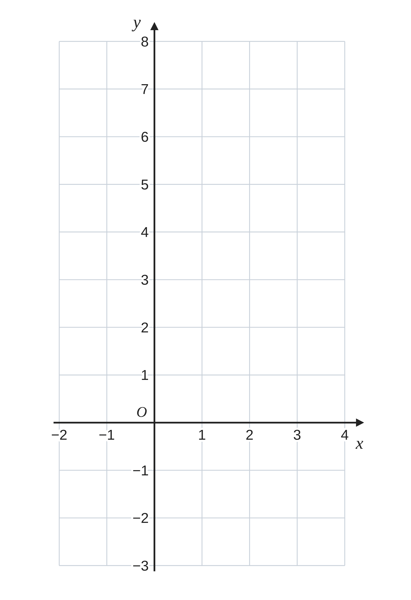
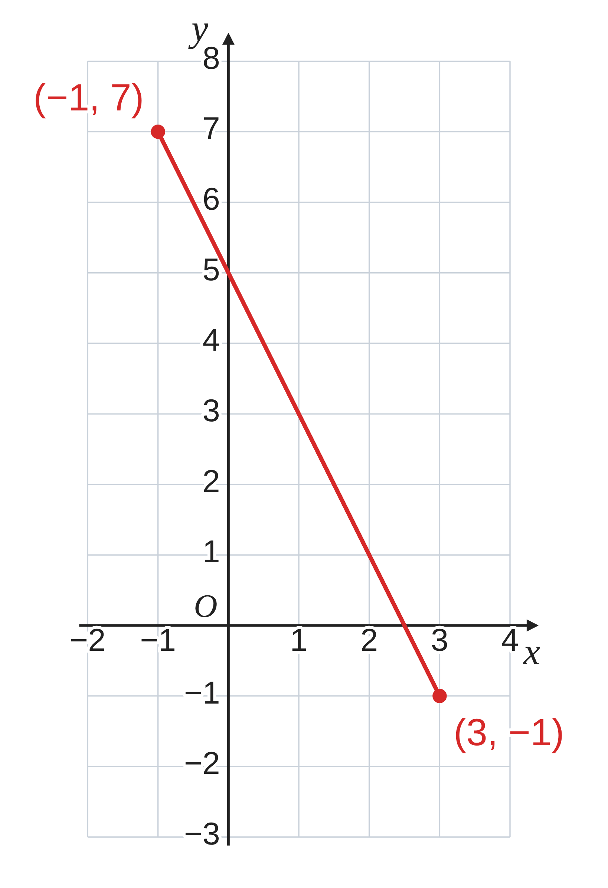

ペア学習
第8時 x の変域から、y の変域を求めよう
第7時の重要語句から、1人1問ずつ、言葉を選んで出題する。
聞かれた人は、その言葉の意味を、自分の言葉で言う。
傾き
切片
右上がり・右下がり
平行
原点を通る
一次関数 第8時 x の変域から、y の変域を求めよう
めあて
第8時 x の変域から、y の変域を求めよう
学習課題
一次関数 y＝2x−1 で、
x の値が −1 以上 3 以下のとき、
y の値は、どんな範囲の値をとるだろう。
右の図にグラフをかいて、考えよう。
【自分の考え】y は、どんな範囲の値をとるか。

一次関数 第8時 x の変域から、y の変域を求めよう
学習課題のまとめ
第8時 x の変域から、y の変域を求めよう
y＝2x−1 で、−1≦x≦3 のとき、y は、どんな範囲の値をとるか。
x＝−1 のとき y＝2×(−1)−1＝−3
x＝3 のとき y＝2×3−1＝5
グラフは、2点 (−1, −3)、(3, 5) を
結ぶ線分になる。
−3≦y≦5

一次関数 第8時 x の変域から、y の変域を求めよう
ことば
第8時 x の変域から、y の変域を求めよう
x のとりうる値の範囲を x の 、
y のとりうる値の範囲を y の という。
−1≦x≦3 は、x が −1 以上 3 以下（−1 も 3 も ）という意味。
−1＜x≦3 は、x が −1 より大きく 3 以下
（−1 は ）という意味。
x の変域があるとき、一次関数のグラフは になる。
y の変域は、線分の の点の y 座標を求め、
ほうの数を左に書いて表す。
一次関数 第8時 x の変域から、y の変域を求めよう
ことば
第8時 x の変域から、y の変域を求めよう
x のとりうる値の範囲を x の変域、
y のとりうる値の範囲を y の変域という。
−1≦x≦3 は、x が −1 以上 3 以下（−1 も 3 もふくむ）という意味。
−1＜x≦3 は、x が −1 より大きく 3 以下
（−1 はふくまない）という意味。
x の変域があるとき、一次関数のグラフは線分になる。
y の変域は、線分の両はしの点の y 座標を求め、
小さいほうの数を左に書いて表す。
一次関数 第8時 x の変域から、y の変域を求めよう
例題
第8時 x の変域から、y の変域を求めよう
一次関数 y＝− x+ で、
x の変域が ≦x≦ のとき、
y の変域を求めよう。
右の図に、グラフもかこう。

一次関数 第8時 x の変域から、y の変域を求めよう
例題 解答
第8時 x の変域から、y の変域を求めよう
一次関数 y＝−2x+5 で、x の変域が −1≦x≦3 のとき、y の変域を求めよう。
x＝−1 のとき y＝−2×(−1)+5＝7
x＝3 のとき y＝−2×3+5＝−1
グラフは右下がりだから、
x＝−1 のとき y は最大、
x＝3 のとき y は最小になる。
−1≦y≦7
（小さい数を左に書く）

一次関数 第8時 x の変域から、y の変域を求めよう
考えよう
第8時 x の変域から、y の変域を求めよう
①
次の 4つの一次関数で、y の変域を求めて、表にまとめよう。
| 一次関数 | y＝2x+1 | y＝(1⁄2)x−1 | y＝−x+2 | y＝−3x |
|---|---|---|---|---|
| x＝−2 のとき y | | | | |
| x＝4 のとき y | | | | |
| y の変域 | | | | |
②
気づいたこと
③
x の変域が p≦x≦q のとき、どんな一次関数でも使える、y の変域の求め方を、まとめよう。
発展
y＝2x+b、1≦x≦4 のとき、y の変域の幅（最大−最小）は、b によって変わるだろうか。
一次関数 第8時 x の変域から、y の変域を求めよう
振り返り
第8時 x の変域から、y の変域を求めよう
今日のめあて
x の変域
y の変域
≦（以上・以下）
線分
今日わかったことを、ペアで1つずつ言い合おう。
ワークシートと演習プリントを出そう。（未完成でも出す）
一次関数 第8時 x の変域から、y の変域を求めよう